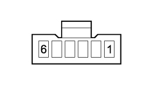

2127OS CHECK ON OPERATION OF NORMAL/SPORT BUTTON
- Path
- Test > 21 GEARBOX UNIT > 2127 ELECTRO-HYDRAULIC SELECTION GEARBOX EXTERNAL CONTROLS > 2127O ELECTROHYDRAULIC SELECTION GEARBOX EXTERNAL CONTROLS TESTS > 2127OS CHECK ON OPERATION OF NORMAL/SPORT BUTTON
- Kind
- test / check procedure
- Applies to
- engines: 2.2 JTS; all production periods; only with equipment: Smart gearbox
- Interactive page
- https://sloeber94.github.io/elrnDB-aBrrSpdr/en/#/946004577
Applies to: engines: 2.2 JTS; all production periods
STEP | CHECK TO BE PERFORMED | REMEDIAL ACTION IF THE CHECK IS NOT OK |
|---|---|---|
1 | Check on button signal Using the Examiner in voltmeter mode connect between pin 2 and earth for the SPORT button connector Press the button and check that the voltage is around 150 mv Release the button and check that the voltage is around 5 Volt | Restore the correct continuity for the wiring between the gearbox control unit and the button |
2 | Check earth connection Disconnect the connector for the button and check that the resistance between pin 1 and earth is less than 1 ohm | Restore the earth connection Replace the robotized gearbox control unit Op. 2127E10 HYDRAULIC SPEED SELECTION SYSTEM CONTROL UNIT - R.R. |
3 | Check on SPORT LED power supply Insert the TEG in the reader Connect the voltmeter between pin 4 of the Sport button connector and earth to check that the battery supply voltage is correct at 12 Volt | Replace the 7.5 A fuse F35 in the junction unit under the dashboard after having verified the cause of malfunction. Restore the wiring between the dashboard control unit and the Sport button |
4 | Check on operation of Normal/Sport button Press the Normal/Sport button and check continuity of contacts between pins 1 and 2 | Replace the Sport button Op. 2127E30 SOFTWARE FUNCTION SELECTION KEY (ONE) FOR ELECTROHYDRAULIC SELECTION GEARBOX - R.R. |

Sport button connector
Topics linked from this page (3)
- 2127E10 HYDRAULIC SPEED SELECTION SYSTEM CONTROL UNIT - R.R.
- 2127E30 SOFTWARE FUNCTION SELECTION KEY (ONE) FOR ELECTROHYDRAULIC SELECTION GEARBOX - R.R.
- E7051 ROBOTIZED GEARBOX